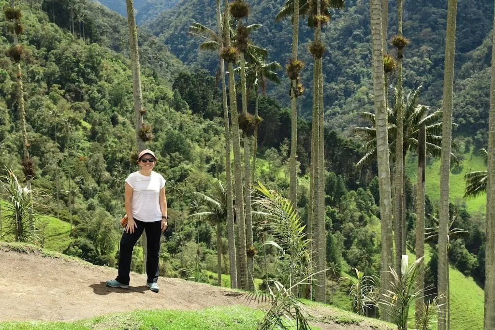
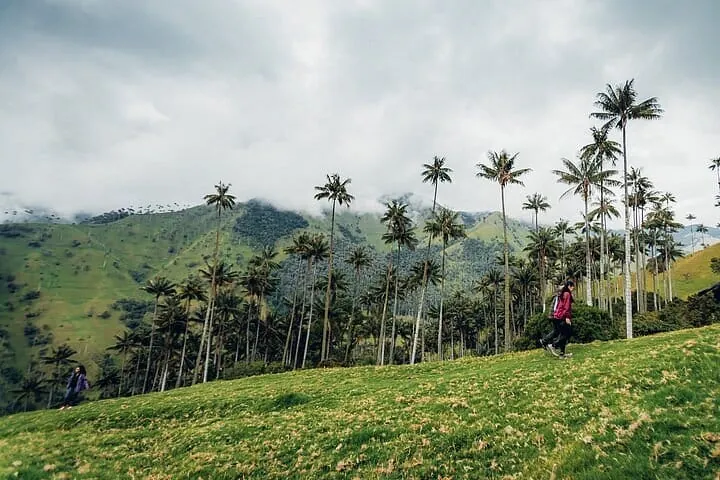
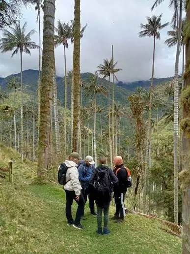

Sendero de las Palmas (Entrada Libre Valle)
La ruta menos conocida pero más impresionante del Valle de Cocora: 6 kilómetros de camino plano junto al río Quindío donde las palmas de cera de 60 metros de altura crean un bosque vertical que te hace sentir diminuto. Sin entrada, sin aglomeraciones, solo tú y la naturaleza en su estado más puro.
Conoce la experiencia
✓ Información verificada en el catálogo local
Este sendero es el secreto mejor guardado de los locales del Valle de Cocora. Mientras la ruta principal se llenaba de turistas, este camino alternativo de 6 km se mantuvo como el predilecto de los cafeteros que caminan entre sus cultivos cada mañana. El recorrido comienza en la entrada alternativa del valle, sigue el cauce del Río Quindío y te sumerge en un bosque vertical de palmas de cera centenarias. A mitad del camino, un puente colgante sobre el río te ofrece la mejor oportunidad para la foto del viaje. Al final del sendero, las vistas del valle completo te recompensan con un panorama que parece sacado de una postal.
Galería de imágenes


.webp)
.webp)

Antes de confirmar tu visita
¿Cuál es el horario de Sendero de las Palmas (Entrada Libre Valle)? Acceso libre 6:00 AM - 6:00 PM
¿Cuánto cuesta? Rango Gratis. Confirma la tarifa final con el local.
¿Cómo reservo? Contacto directo por WhatsApp, sin intermediarios ni comisiones.
Lo que puedes encontrar
Preguntas frecuentes
¿Qué es el Sendero de las Palmas?
Sendero dentro del Valle de Cocora con entrada libre. Recorrido entre palmas de cera, el árbol nacional de Colombia. 6 km ida y vuelta.
¿Cuánto cuesta?
Gratis. Entrada libre al Valle de Cocora. No hay peaje ni entrada al sendero.
¿Cuánto dura?
3-4 horas ida y vuelta. Nivel fácil. Sendero plano junto al río.
¿Qué ver?
Palmas de cera de 60 metros de altura, río Quindío, puente colgante, bosque nublado, aves.
¿Cómo llego?
Jeep Willys desde Plaza de Bolívar ($5.000). Baja en la entrada del Valle. Caminar 10 min hasta el sendero.
Qué hacer cerca
Consejos para tu visita
Consejo: Lleva agua y comida.
Sendero: Largo pero plano.
✓ Información verificada en el catálogo local